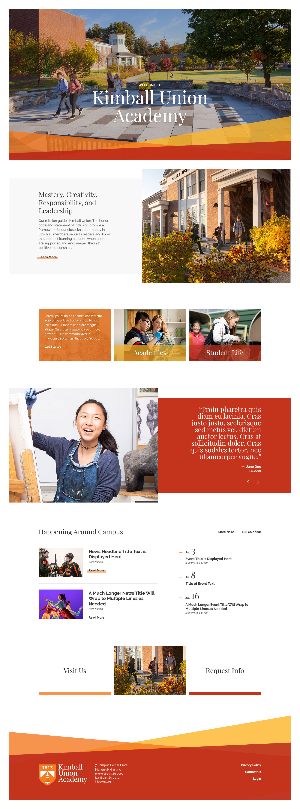
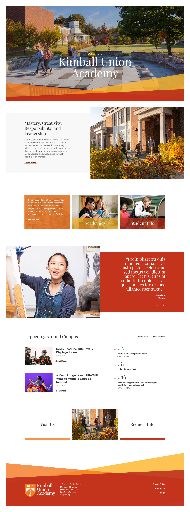

This frame highlights this design's hover/on states. Again these states are simple in nature, though I anticipate the use of graceful microinteractions to aid in the transition from off to on and back again.
Table of Contents Next
 
